CiteFuse
Yingxin Lin and Hani Jieun Kim1
Source:vignettes/CiteFuse_BioCAsia_workshop.Rmd
CiteFuse_BioCAsia_workshop.RmdWorkshop Title
Overview
Instructors and contact information
- Yingxin Lin (yingxin.lin@sydney.edu.au)
- Hani Jieun Kim (hani.kim@sydney.edu.au)
Description
The latest breakthrough in single-cell omics is on multi-modal profiling of different biomolecule species in individual cells. Among the fast evolving biotechnologies developed for multi-modal profiling, cellular indexing of transcriptomes and epitopes by sequencing (CITE-seq) is attracting attention, especially in the field of immunology, given its ability to simultaneously quantify global gene expression and cellular proteins using RNA-sequencing and antibody-derived tags (ADTs) on single cells. While the additional protein marker information brought about by ADTs is extremely valuable, new biological insights can only be gained by developing analytic methods that fully take advantage of the complementarity between mRNA and ADT expression measured in CITE-seq.
To address this, we developed a streamlined pipeline–CiteFuse–that consists of a suite of tools for the integration and the downstream analysis of CITE-seq data. In this workshop, we will provide a hands-on experience to the CiteFuse package and cover all the steps including doublet detection, modality integration, cell type clustering, differential RNA and ADT expression analysis, ADT evaluation, and ligand–receptor interaction analysis on a publicly available CITE-seq dataset. We also demonstrate the applicability of CiteFuse package on other multi-modal data types by applying our pipeline on the recently developed ASAP-seq data.
This vignette provides a more complete description of the various tools in CiteFuse and will serve as the basis of our workshop.
Pre-requisites
Software:
- Basic knowledge of R syntax
- Familiarity with single-cell RNA-sequencing
- Familiarity with the
SingleCellExperimentclass
Background reading:
- The textbook “Orchestrating Single-Cell Analysis with Bioconductor” is a great reference for single-cell analysis using Bioconductor packages.
- CiteFuse enables multi-modal analysis of CITE-seq data
- Simultaneous epitope and transcriptome measurement in single cells
R / Bioconductor packages used
- This workshop will focus on Bioconductor packages [SingleCellExperiment] (https://bioconductor.org/packages/release/bioc/html/SingleCellExperiment.html) and CiteFuse.
Time outline
An example for a 55-minute workshop:
| Activity | Time |
|---|---|
| Introduction | 15m |
| Data processing and integration | 15m |
| Downstream analysis | 15m |
| Application of CiteFuse on ASAP-seq | 5m |
| Wrap-up and Conclusions | 5m |
Workshop goals and objectives
List “big picture” student-centered workshop goals and learning objectives. Learning goals and objectives are related, but not the same thing. These goals and objectives will help some people to decide whether to attend the conference for training purposes, so please make these as precise and accurate as possible.
Learning goals are high-level descriptions of what participants will learn and be able to do after the workshop is over. Learning objectives, on the other hand, describe in very specific and measurable terms specific skills or knowledge attained. The Bloom’s Taxonomy may be a useful framework for defining and describing your goals and objectives, although there are others.
Analysis
The dataset
The dataset we will be working with concerns a single-cell RNA-sequencing dataset consisting of two different experiments, which correspond to two treatments. McFaline-Figueroa et al. studied the epithelial-to-mesenchymal transition (EMT), where cells spatially migrate from the epithelium to the mesenchyme during development. This process will be described by a trajectory, reflecting the gene expression changes occurring during this migration. The authors furthermore studied both a control (Mock) condition, and a condition in the absence of transforming growth factor \(\beta\) (TGFB).
In summary, we will be predominantly investigating a CITE-seq dataset consisting of PBMCs. For simplicity, this lineage is studied in two different conditions; a control condition and a TGFB-absent condition.
First, install CiteFuse using BiocManager.
if (!requireNamespace("BiocManager", quietly = TRUE)) { install.packages("BiocManager") } BiocManager::install("CiteFuse")
library(CiteFuse) library(scater) #> Loading required package: SingleCellExperiment #> Loading required package: SummarizedExperiment #> Loading required package: GenomicRanges #> Loading required package: stats4 #> Loading required package: BiocGenerics #> Loading required package: parallel #> #> Attaching package: 'BiocGenerics' #> The following objects are masked from 'package:parallel': #> #> clusterApply, clusterApplyLB, clusterCall, clusterEvalQ, #> clusterExport, clusterMap, parApply, parCapply, parLapply, #> parLapplyLB, parRapply, parSapply, parSapplyLB #> The following objects are masked from 'package:stats': #> #> IQR, mad, sd, var, xtabs #> The following objects are masked from 'package:base': #> #> anyDuplicated, append, as.data.frame, basename, cbind, colnames, #> dirname, do.call, duplicated, eval, evalq, Filter, Find, get, grep, #> grepl, intersect, is.unsorted, lapply, Map, mapply, match, mget, #> order, paste, pmax, pmax.int, pmin, pmin.int, Position, rank, #> rbind, Reduce, rownames, sapply, setdiff, sort, table, tapply, #> union, unique, unsplit, which, which.max, which.min #> Loading required package: S4Vectors #> #> Attaching package: 'S4Vectors' #> The following object is masked from 'package:base': #> #> expand.grid #> Loading required package: IRanges #> Loading required package: GenomeInfoDb #> Loading required package: Biobase #> Welcome to Bioconductor #> #> Vignettes contain introductory material; view with #> 'browseVignettes()'. To cite Bioconductor, see #> 'citation("Biobase")', and for packages 'citation("pkgname")'. #> Loading required package: DelayedArray #> Loading required package: matrixStats #> #> Attaching package: 'matrixStats' #> The following objects are masked from 'package:Biobase': #> #> anyMissing, rowMedians #> #> Attaching package: 'DelayedArray' #> The following objects are masked from 'package:matrixStats': #> #> colMaxs, colMins, colRanges, rowMaxs, rowMins, rowRanges #> The following objects are masked from 'package:base': #> #> aperm, apply, rowsum #> Loading required package: ggplot2 library(SingleCellExperiment) library(DT)
We have made the pre-processed, integrated dataset available as a SingleCellExperiment object in the workshop package, which we import below.
data("CITEseq_example", package = "CiteFuse") names(CITEseq_example) #> [1] "RNA" "ADT" "HTO" lapply(CITEseq_example, dim) #> $RNA #> [1] 19521 500 #> #> $ADT #> [1] 49 500 #> #> $HTO #> [1] 4 500
Here, we start from a list of three matrices of unique molecular identifier (UMI), antibody derived tags (ADT) and hashtag oligonucleotide (HTO) count, which have common cell names. There are 500 cells in our subsetted dataset. And characteristically of CITE-seq data, the matrices are matched, meaning that for any given cell we know the expression level of their RNA transcripts (genome-wide) and its corresponding cell surface protein expression. The preprocessing function will utilise the three matrices and its common cell names to create a SingleCellExperiment object, which stores RNA data in an assay and ADT and HTO data within in the altExp slot.
sce_citeseq <- preprocessing(CITEseq_example) sce_citeseq #> class: SingleCellExperiment #> dim: 19521 500 #> metadata(0): #> assays(1): counts #> rownames(19521): hg19_AL627309.1 hg19_AL669831.5 ... hg19_MT-ND6 #> hg19_MT-CYB #> rowData names(0): #> colnames(500): AAGCCGCGTTGTCTTT GATCGCGGTTATCGGT ... TTGGCAACACTAGTAC #> GCTGCGAGTTGTGGCC #> colData names(0): #> reducedDimNames(0): #> altExpNames(2): ADT HTO
Doublet detection using CiteFuse
HTO Normalisation and Visualisation
The function normaliseExprs is used to scale the alternative expression. Here, we used it to perform log-transformation of the HTO count, by setting transform = "log".
sce_citeseq <- normaliseExprs(sce = sce_citeseq, altExp_name = "HTO", transform = "log")
Then we can perform dimension reduction on the HTO count by using runTSNE or runUMAP, then use visualiseDim function to visualise the reduced dimension plot. Our CITE-seq dataset contain data from four samples that were pooled before sequencing. The samples were multiplexed through cell hashing (Stoekius et al., 2018). The four clusters observed on reduced dimension plots equate to the four different samples.
sce_citeseq <- scater::runTSNE(sce_citeseq, altexp = "HTO", name = "TSNE_HTO", pca = TRUE) visualiseDim(sce_citeseq, dimNames = "TSNE_HTO") + labs(title = "tSNE (HTO)")
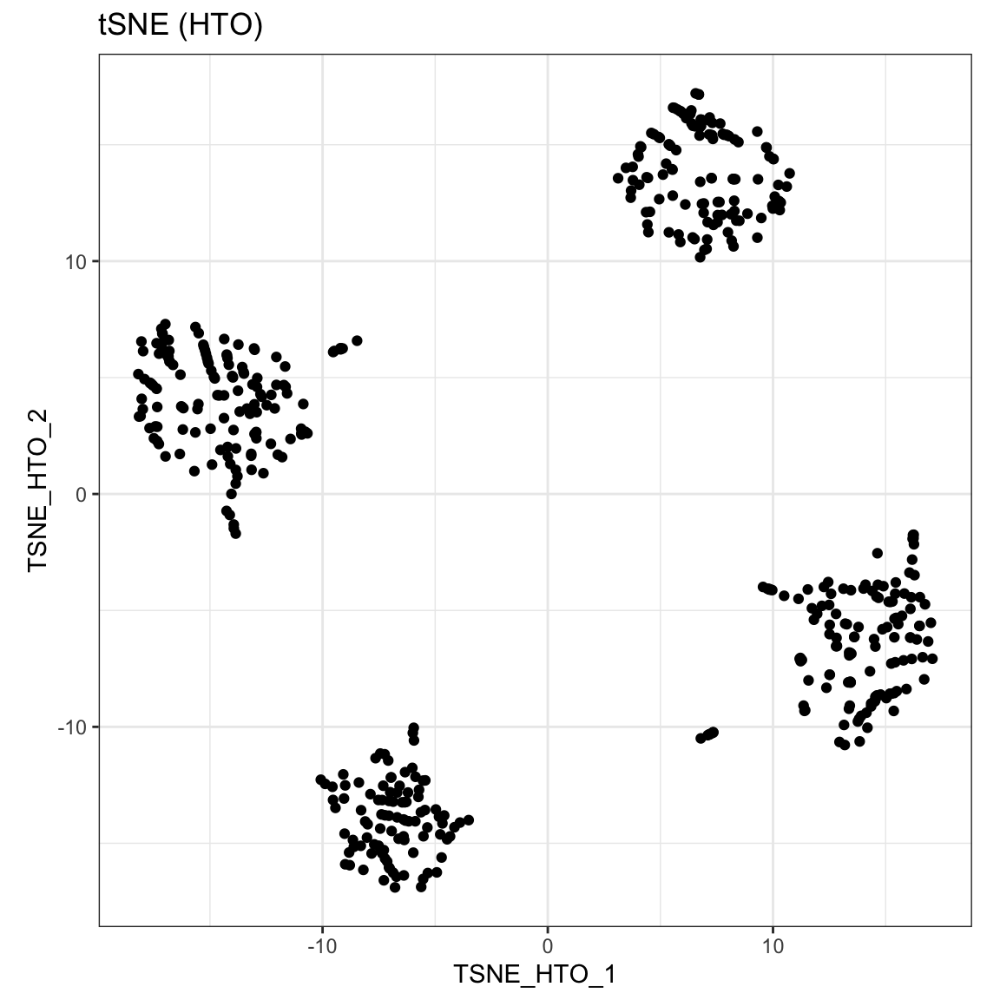
sce_citeseq <- scater::runUMAP(sce_citeseq, altexp = "HTO", name = "UMAP_HTO") visualiseDim(sce_citeseq, dimNames = "UMAP_HTO") + labs(title = "UMAP (HTO)")
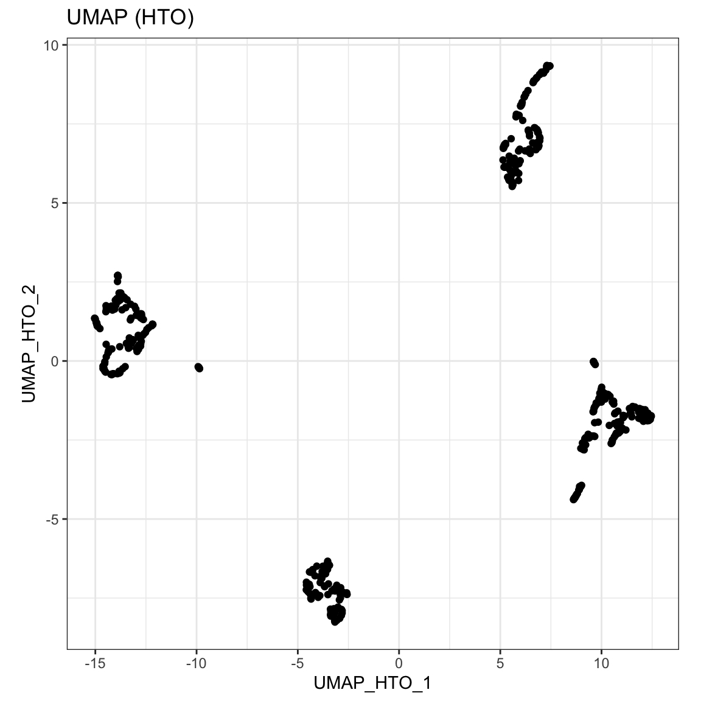
Doublet identification step 1: cross-sample doublet detection
An important step in single cell data analysis is the removal of doublets. Doublets form as a result of co-encapsulation of cells within a droplet, leading to a hybrid transcriptome from two or more cells. In CiteFuse, we implement a step-wise doublet detection approach to remove doublets. We first identify the cross-sample doublets via the crossSampleDoublets function.
sce_citeseq <- crossSampleDoublets(sce_citeseq) #> number of iterations= 20 #> number of iterations= 24 #> number of iterations= 46 #> number of iterations= 50
The results of the cross sample doublets are then saved in colData as doubletClassify_between_label and doubletClassify_between_class.
table(sce_citeseq$doubletClassify_between_label) #> #> 1 2 3 4 #> 115 121 92 129 #> doublet/multiplet #> 43 table(sce_citeseq$doubletClassify_between_class) #> #> doublet/multiplet Singlet #> 43 457
We can then highlight the cross-sample doublets in our tSNE plot of HTO count.
visualiseDim(sce_citeseq, dimNames = "TSNE_HTO", colour_by = "doubletClassify_between_label")

Furthermore, plotHTO function allows us to plot the pairwise scatter HTO count. Any cells that show co-expression of orthologocal HTOs (red) are considered as doublets.
plotHTO(sce_citeseq, 1:4)

Doublet identification step 1: within-sample doublet detection
We then identify the within-sample doublets via the withinSampleDoublets function.
sce_citeseq <- withinSampleDoublets(sce_citeseq, minPts = 10)
The results of the cross sample doublets are then saved in the colData as doubletClassify_within_label and doubletClassify_within_class.
table(sce_citeseq$doubletClassify_within_label) #> #> Doublets(Within)_1 Doublets(Within)_2 Doublets(Within)_3 Doublets(Within)_4 #> 3 7 4 6 #> NotDoublets(Within) #> 480 table(sce_citeseq$doubletClassify_within_class) #> #> Doublet Singlet #> 20 480
Again, we can visualise the within-sample doublets in our tSNE plot.
visualiseDim(sce_citeseq, dimNames = "TSNE_HTO", colour_by = "doubletClassify_within_label")

Finally, we can filter out the doublet cells (both within and between batches) for the downstream analysis.
sce_citeseq <- sce_citeseq[, sce_citeseq$doubletClassify_within_class == "Singlet" & sce_citeseq$doubletClassify_between_class == "Singlet"] sce_citeseq #> class: SingleCellExperiment #> dim: 19521 437 #> metadata(3): doubletClassify_between_threshold #> doubletClassify_between_resultsMat doubletClassify_within_resultsMat #> assays(1): counts #> rownames(19521): hg19_AL627309.1 hg19_AL669831.5 ... hg19_MT-ND6 #> hg19_MT-CYB #> rowData names(0): #> colnames(437): GATCGCGGTTATCGGT GGCTGGTAGAGGTTAT ... TTGGCAACACTAGTAC #> GCTGCGAGTTGTGGCC #> colData names(5): doubletClassify_between_label #> doubletClassify_between_class nUMI doubletClassify_within_label #> doubletClassify_within_class #> reducedDimNames(2): TSNE_HTO UMAP_HTO #> altExpNames(2): ADT HTO
Clustering
Performing SNF
The first step of analysis is to integrate the RNA and ADT matrix. We use a popular integration algorithm called similarity network fusion (SNF) to integrate the multiomic data.
sce_citeseq <- scater::logNormCounts(sce_citeseq) sce_citeseq <- normaliseExprs(sce_citeseq, altExp_name = "ADT", transform = "log") system.time(sce_citeseq <- CiteFuse(sce_citeseq)) #> Calculating affinity matrix #> Performing SNF #> user system elapsed #> 7.099 0.313 7.954
We now proceed with the fused matrix, which is stored as SNF_W in our sce_citeseq object.
Performing spectral clustering
CiteFuse implements two different clustering algorithms on the fused matrix, spectral clustering and Louvain clustering. First, we perform spectral clustering with sufficient numbers of K and use the eigen values to determine the optimal number of clusters.
SNF_W_clust <- spectralClustering(metadata(sce_citeseq)[["SNF_W"]], K = 20) #> Computing Spectral Clustering #> Computing Diffusion Coordinates #> Used default value: 20 dimensions plot(SNF_W_clust$eigen_values)
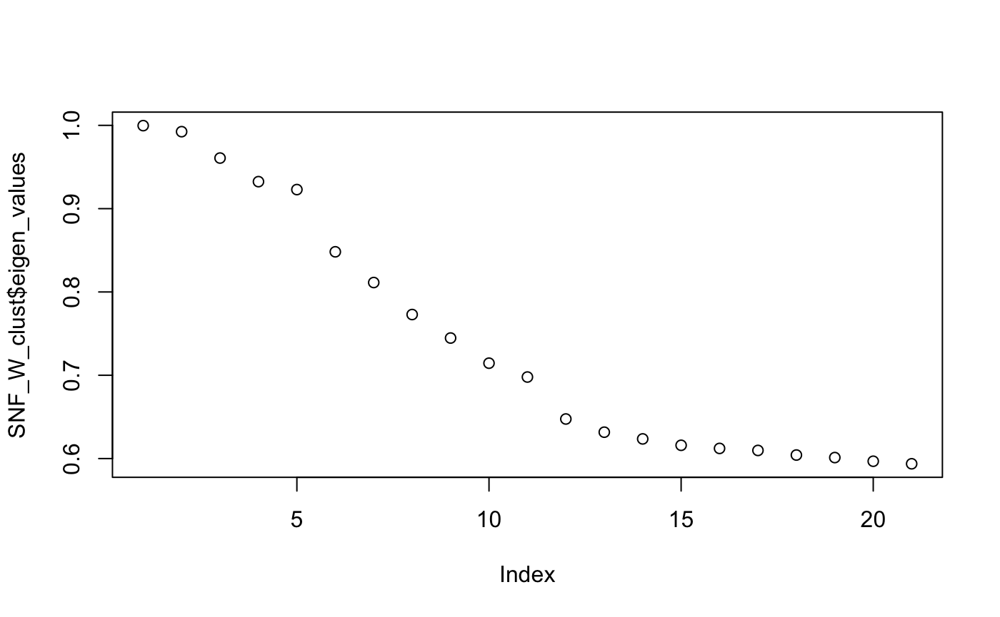
Using the optimal cluster number defined from the previous step, we can now use the spectralClutering function to cluster the single cells by specifying the number of clusters in K. The function takes a cell-to-cell similarity matrix as an input. We have already created the fused similarity matrix from CiteFuse. Since the CiteFuse function creates and stores the similarity matries from ADT and RNA expression, as well the fused matrix, we can use these two to compare the clustering outcomes by data modality.
SNF_W_clust <- spectralClustering(metadata(sce_citeseq)[["SNF_W"]], K = 5) #> Computing Spectral Clustering #> Computing Diffusion Coordinates #> Used default value: 5 dimensions sce_citeseq$SNF_W_clust <- as.factor(SNF_W_clust$labels) SNF_W1_clust <- spectralClustering(metadata(sce_citeseq)[["ADT_W"]], K = 5) #> Computing Spectral Clustering #> Computing Diffusion Coordinates #> Used default value: 5 dimensions sce_citeseq$ADT_clust <- as.factor(SNF_W1_clust$labels) SNF_W2_clust <- spectralClustering(metadata(sce_citeseq)[["RNA_W"]], K = 5) #> Computing Spectral Clustering #> Computing Diffusion Coordinates #> Used default value: 5 dimensions sce_citeseq$RNA_clust <- as.factor(SNF_W2_clust$labels)
Visualisation
The outcome of the clustering can be easily visualised on a reduced dimensions plot by highlighting the points by cluster label.
sce_citeseq <- reducedDimSNF(sce_citeseq, method = "tSNE", dimNames = "tSNE_joint") g1 <- visualiseDim(sce_citeseq, dimNames = "tSNE_joint", colour_by = "SNF_W_clust") + labs(title = "tSNE (SNF clustering)") g2 <- visualiseDim(sce_citeseq, dimNames = "tSNE_joint", colour_by = "ADT_clust") + labs(title = "tSNE (ADT clustering)") g3 <- visualiseDim(sce_citeseq, dimNames = "tSNE_joint", colour_by = "RNA_clust") + labs(title = "tSNE (RNA clustering)") library(gridExtra) #> #> Attaching package: 'gridExtra' #> The following object is masked from 'package:Biobase': #> #> combine #> The following object is masked from 'package:BiocGenerics': #> #> combine grid.arrange(g3, g2, g1, ncol = 2)

The expression of genes and proteins can be visualised by changing the colour_by parameter to assess the clusters. As an example, we highlight the plot by the RNA and ADT expression level of CD8.
g1 <- visualiseDim(sce_citeseq, dimNames = "tSNE_joint", colour_by = "hg19_CD8A", data_from = "assay", assay_name = "logcounts") + labs(title = "tSNE: hg19_CD8A (RNA expression)") g2 <- visualiseDim(sce_citeseq,dimNames = "tSNE_joint", colour_by = "CD8", data_from = "altExp", altExp_assay_name = "logcounts") + labs(title = "tSNE: CD8 (ADT expression)") grid.arrange(g1, g2, ncol = 2)
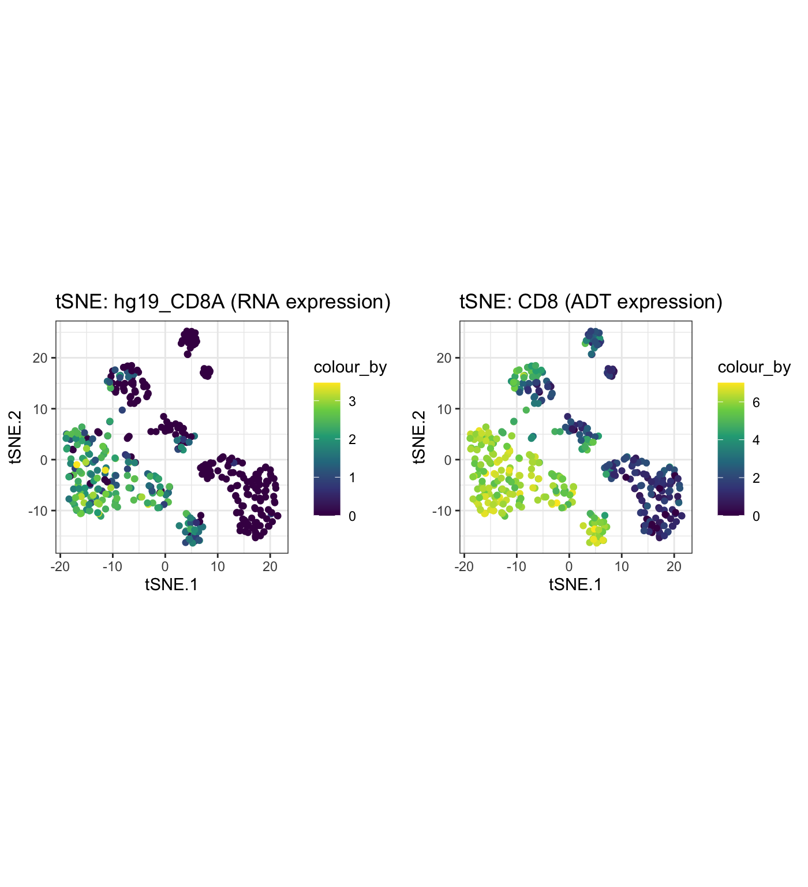
Louvain clustering
As well as spectral clustering, CiteFuse can implement Louvain clustering if users wish to use another clustering method. We use the igraph package, and any community detection algorithms available in their package can be selected by changing the method parameter.
SNF_W_louvain <- igraphClustering(sce_citeseq, method = "louvain") table(SNF_W_louvain) #> SNF_W_louvain #> 1 2 3 4 5 6 7 8 9 #> 30 38 80 29 90 37 52 29 52 sce_citeseq$SNF_W_louvain <- as.factor(SNF_W_louvain) visualiseDim(sce_citeseq, dimNames = "tSNE_joint", colour_by = "SNF_W_louvain") + labs(title = "tSNE (SNF louvain clustering)")
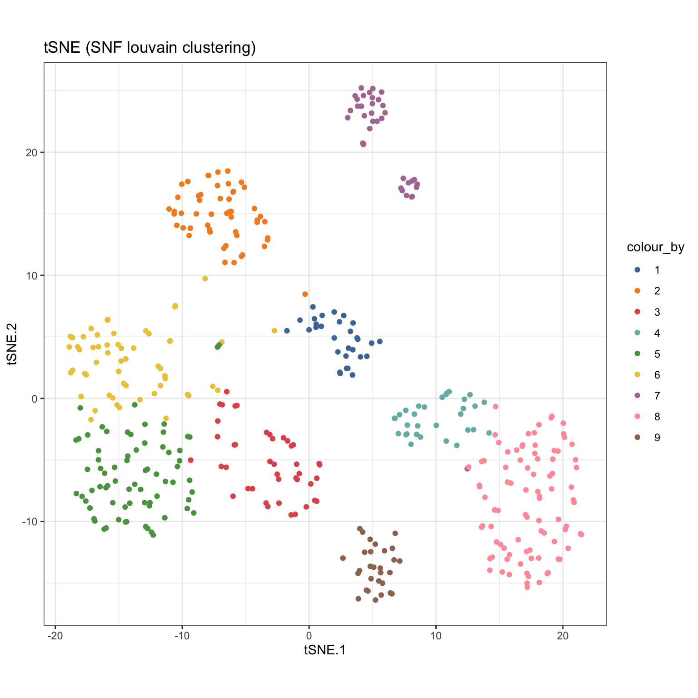
visualiseKNN(sce_citeseq, colour_by = "SNF_W_louvain")

Differential Expression Analysis
Exploration of feature expression
CiteFuse has a wide range of visualisation tools to facilitate exploratory analysis of CITE-seq data. The visualiseExprs function is an easy-to-use function to generate boxplots, violinplots, jitter plots, density plots, and pairwise scatter/density plots of genes and proteins expressed in the data. The plots can be grouped by using the cluster labels stored in the sce_citeseq object.
visualiseExprs(sce_citeseq, plot = "boxplot", group_by = "SNF_W_louvain", feature_subset = c("hg19_CD2", "hg19_CD4", "hg19_CD8A", "hg19_CD19"))

visualiseExprs(sce_citeseq, plot = "violin", group_by = "SNF_W_louvain", feature_subset = c("hg19_CD2", "hg19_CD4", "hg19_CD8A", "hg19_CD19"))

visualiseExprs(sce_citeseq, plot = "jitter", group_by = "SNF_W_louvain", feature_subset = c("hg19_CD2", "hg19_CD4", "hg19_CD8A", "hg19_CD19"))

visualiseExprs(sce_citeseq, plot = "density", group_by = "SNF_W_louvain", feature_subset = c("hg19_CD2", "hg19_CD4", "hg19_CD8A", "hg19_CD19")) #> Picking joint bandwidth of 0.277 #> Picking joint bandwidth of 0.354 #> Picking joint bandwidth of 0.248 #> Picking joint bandwidth of 0.388

visualiseExprs(sce_citeseq, altExp_name = "ADT", group_by = "SNF_W_louvain", plot = "violin", n = 5)
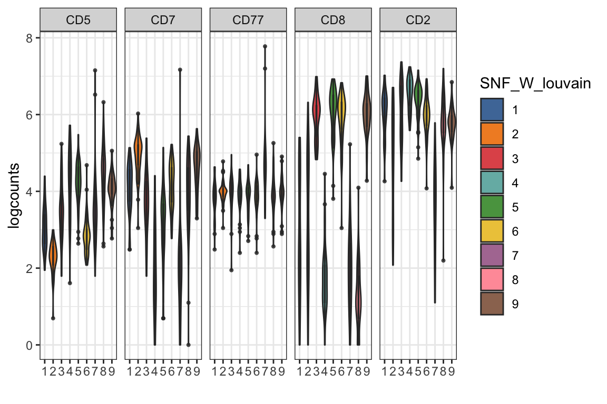
visualiseExprs(sce_citeseq, altExp_name = "ADT", plot = "jitter", group_by = "SNF_W_louvain", feature_subset = c("CD2", "CD8", "CD4", "CD19"))
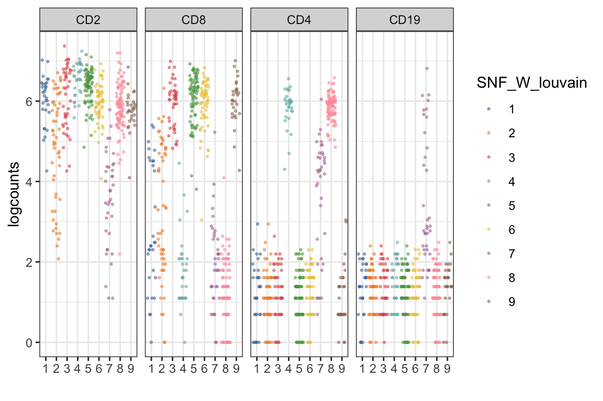
visualiseExprs(sce_citeseq, altExp_name = "ADT", plot = "density", group_by = "SNF_W_louvain", feature_subset = c("CD2", "CD8", "CD4", "CD19")) #> Picking joint bandwidth of 0.274 #> Picking joint bandwidth of 0.362 #> Picking joint bandwidth of 0.285 #> Picking joint bandwidth of 0.28

visualiseExprs(sce_citeseq, altExp_name = "ADT", plot = "pairwise", feature_subset = c("CD4", "CD8")) #> number of iterations= 13 #> number of iterations= 18

visualiseExprs(sce_citeseq, altExp_name = "ADT", plot = "pairwise", feature_subset = c("CD45RA", "CD4", "CD8"), threshold = rep(4, 3))
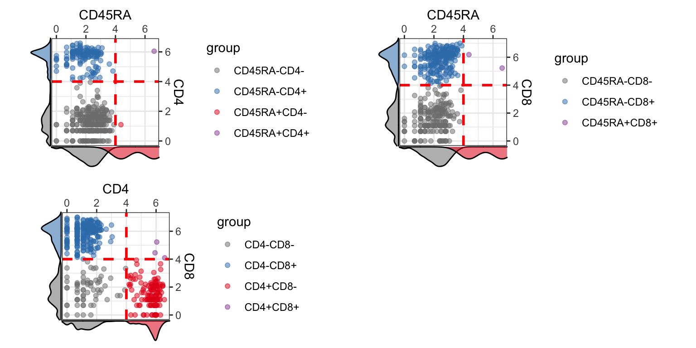
Perform DE Analysis with Wilcoxon Rank Sum test
CiteFuse also calculates differentially expressed (DE) genes through the DEgenes function. The cluster grouping to use must be specified in the group parameter. If altExp_name is not specified, RNA expression will be used as the default expression matrix.
Results form the DE analysis is stored in sce_citeseq as DE_res_RNA_filter and DE_res_ADT_filter for RNA and ADT expression, respectively.
For RNA expression
# DE will be performed for RNA if altExp_name = "none" sce_citeseq <- DEgenes(sce_citeseq, altExp_name = "none", group = sce_citeseq$SNF_W_louvain, return_all = TRUE, exprs_pct = 0.5) sce_citeseq <- selectDEgenes(sce_citeseq, altExp_name = "none") datatable(format(do.call(rbind, metadata(sce_citeseq)[["DE_res_RNA_filter"]]), digits = 2))
For ADT count
sce_citeseq <- DEgenes(sce_citeseq, altExp_name = "ADT", group = sce_citeseq$SNF_W_louvain, return_all = TRUE, exprs_pct = 0.5) sce_citeseq <- selectDEgenes(sce_citeseq, altExp_name = "ADT") datatable(format(do.call(rbind, metadata(sce_citeseq)[["DE_res_ADT_filter"]]), digits = 2))
Visualising DE Results
The DE genes can be visualised with the DEbubblePlot and DEcomparisonPlot. In each case, the gene names must first be extracted from the DE result objects.
circlepackPlot
The circlepackPlot takes a list of all DE genes from RNA and ADT DE analysis and will plot only the top most significant DE genes to plot.
rna_DEgenes <- metadata(sce_citeseq)[["DE_res_RNA_filter"]] adt_DEgenes <- metadata(sce_citeseq)[["DE_res_ADT_filter"]] rna_DEgenes <- lapply(rna_DEgenes, function(x){ x$name <- gsub("hg19_", "", x$name) x}) DEbubblePlot(list(RNA = rna_DEgenes, ADT = adt_DEgenes)) #> Non-leaf weights ignored

DEcomparisonPlot
For the DEcomparisonPlot, as well as a list containing the DE genes for RNA and ADT, a feature_list specifying the genes and proteins of interest is required.
rna_list <- c("hg19_CD4", "hg19_CD8A", "hg19_HLA-DRB1", "hg19_ITGAX", "hg19_NCAM1", "hg19_CD27", "hg19_CD19") adt_list <- c("CD4", "CD8", "MHCII (HLA-DR)", "CD11c", "CD56", "CD27", "CD19") rna_DEgenes_all <- metadata(sce_citeseq)[["DE_res_RNA"]] adt_DEgenes_all <- metadata(sce_citeseq)[["DE_res_ADT"]] feature_list <- list(RNA = rna_list, ADT = adt_list) de_list <- list(RNA = rna_DEgenes_all, ADT = adt_DEgenes_all) DEcomparisonPlot(de_list = de_list, feature_list = feature_list) #> Warning: Use of `df$group` is discouraged. Use `group` instead. #> Warning: Use of `df$group` is discouraged. Use `group` instead. #> Warning: Use of `df$group` is discouraged. Use `group` instead. #> Warning: Use of `df$group` is discouraged. Use `group` instead. #> Warning: Use of `df$group` is discouraged. Use `group` instead.
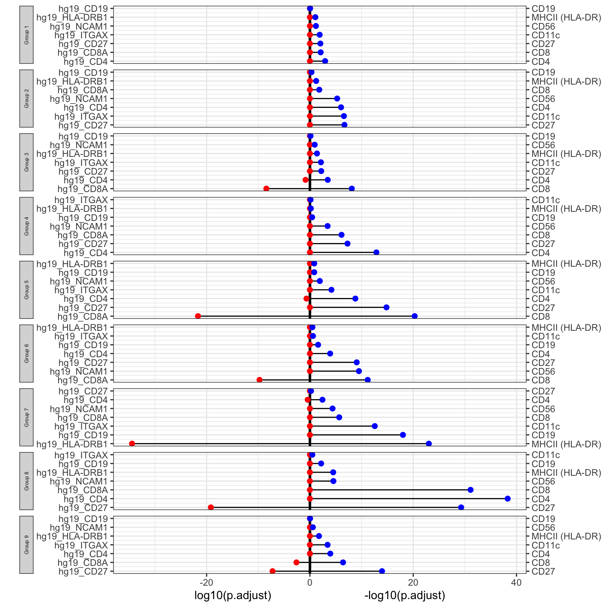
ADT Importance Evaluation
An important evaluation in CITE-seq data analysis is to assess the quality of each ADT and to evaluate the contribution of ADTs towards clustering outcome. CiteFuse calculates the relative importance of ADT towards clustering outcome by using a random forest model. The higher the score of an ADT, the greater its importance towards the final clustering outcome.
set.seed(2020) sce_citeseq <- importanceADT(sce_citeseq, group = sce_citeseq$SNF_W_louvain, subsample = TRUE) visImportance(sce_citeseq, plot = "boxplot") #> Warning: Use of `df_toPlot$features` is discouraged. Use `features` instead. #> Warning: Use of `df_toPlot$importance` is discouraged. Use `importance` instead. #> Warning: Use of `df_toPlot$features` is discouraged. Use `features` instead.

visImportance(sce_citeseq, plot = "heatmap")
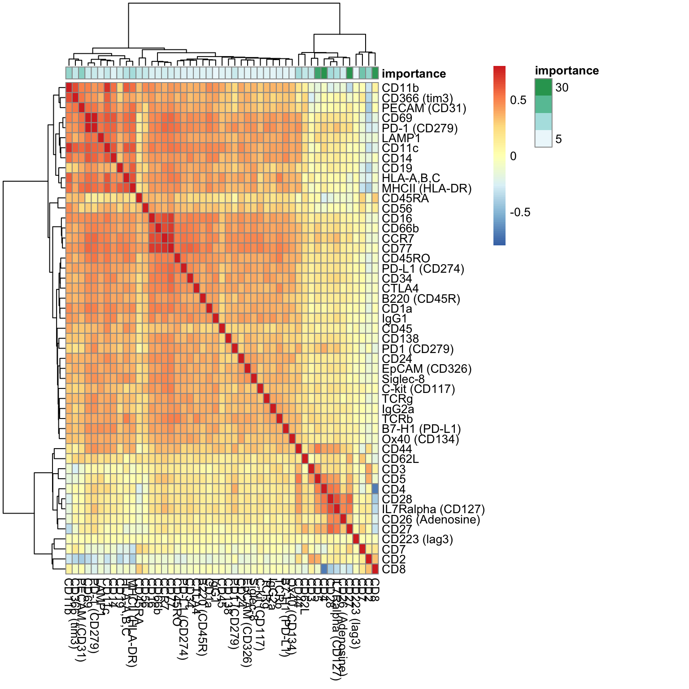
sort(metadata(sce_citeseq)[["importanceADT"]], decreasing = TRUE)[1:20] #> CD4 CD8 CD27 CD5 #> 30.558333 29.224077 27.691326 22.097058 #> CD7 PECAM (CD31) CD11b CD2 #> 16.041289 13.495346 12.716874 12.241439 #> MHCII (HLA-DR) CD28 CD44 IL7Ralpha (CD127) #> 10.332952 10.189411 9.006814 8.808518 #> HLA-A,B,C CD62L CD11c CD45RA #> 6.961884 5.921209 5.678501 5.612525 #> CD366 (tim3) CD3 CD56 PD-1 (CD279) #> 5.294986 5.263878 4.732472 4.427862
The importance scores can be visualised in a boxplot and heatmap. Our evaluation of ADT importance show that unsurprisingly CD4 and CD8 are the top two discriminating proteins in PBMCs.
Let us try clustering with only ADTs with a score greater than 5.
subset_adt <- names(which(metadata(sce_citeseq)[["importanceADT"]] > 5)) subset_adt #> [1] "CD11b" "CD11c" "CD2" #> [4] "CD27" "CD28" "CD3" #> [7] "CD366 (tim3)" "CD4" "CD44" #> [10] "CD45RA" "CD5" "CD62L" #> [13] "CD7" "CD8" "HLA-A,B,C" #> [16] "IL7Ralpha (CD127)" "MHCII (HLA-DR)" "PECAM (CD31)" system.time(sce_citeseq <- CiteFuse(sce_citeseq, ADT_subset = subset_adt, metadata_names = c("W_SNF_adtSubset1", "W_ADT_adtSubset1", "W_RNA"))) #> Calculating affinity matrix #> Performing SNF #> user system elapsed #> 6.161 0.280 6.978 SNF_W_clust_adtSubset1 <- spectralClustering(metadata(sce_citeseq)[["W_SNF_adtSubset1"]], K = 5) #> Computing Spectral Clustering #> Computing Diffusion Coordinates #> Used default value: 5 dimensions sce_citeseq$SNF_W_clust_adtSubset1 <- as.factor(SNF_W_clust_adtSubset1$labels) library(mclust) #> Package 'mclust' version 5.4.6 #> Type 'citation("mclust")' for citing this R package in publications. adjustedRandIndex(sce_citeseq$SNF_W_clust_adtSubset1, sce_citeseq$SNF_W_clust) #> [1] 0.9305236
When we compare between the two clustering outcomes, we find that the adjusted rand index is approximately 0.93, where a value of 1 denotes complete concordance.
Gene - ADT network
The geneADTnetwork function plots an interaction network between genes identified from the DE analysis. The nodes denote proteins and RNA whilst the edges denote positive and negative correlation in expression.
RNA_feature_subset <- unique(as.character(unlist(lapply(rna_DEgenes_all, "[[", "name")))) ADT_feature_subset <- unique(as.character(unlist(lapply(adt_DEgenes_all, "[[", "name")))) geneADTnetwork(sce_citeseq, RNA_feature_subset = RNA_feature_subset, ADT_feature_subset = ADT_feature_subset, cor_method = "pearson", network_layout = igraph::layout_with_fr)

#> IGRAPH 58acbaf UN-B 72 134 --
#> + attr: name (v/c), label (v/c), class (v/c), type (v/l), shape (v/c),
#> | color (v/c), size (v/n), label.cex (v/n), label.color (v/c), value
#> | (e/n), color (e/c), weights (e/n)
#> + edges from 58acbaf (vertex names):
#> [1] RNA_hg19_IL7R --ADT_CD28
#> [2] RNA_hg19_LTB --ADT_CD28
#> [3] RNA_hg19_NKG7 --ADT_CD28
#> [4] RNA_hg19_CST7 --ADT_CD28
#> [5] RNA_hg19_GNLY --ADT_CD28
#> [6] RNA_hg19_CCL5 --ADT_CD28
#> + ... omitted several edgesRNA Ligand - ADT Receptor Analysis
With the advent of CITE-seq, we can now predict ligand-receptor interactions by using cell surface protein expression. CiteFuse implements a ligandReceptorTest to find ligand receptor interactions between sender and receiver cells. Importantly, the ADT count is used to predict receptor expression within receiver cells. Note that the setting altExp_name = "RNA" would enable users to predict ligand-receptor interaction from RNA expression only.
data("lr_pair_subset", package = "CiteFuse") head(lr_pair_subset) #> [,1] [,2] #> [1,] "hg19_IL17RA" "CD45" #> [2,] "hg19_FAS" "CD11b" #> [3,] "hg19_GZMK" "CD62L" #> [4,] "hg19_CD40LG" "CD11b" #> [5,] "hg19_FLT3LG" "CD62L" #> [6,] "hg19_GZMA" "CD19" sce_citeseq <- normaliseExprs(sce = sce_citeseq, altExp_name = "ADT", transform = "zi_minMax") sce_citeseq <- normaliseExprs(sce = sce_citeseq, altExp_name = "none", exprs_value = "logcounts", transform = "minMax") sce_citeseq <- ligandReceptorTest(sce = sce_citeseq, ligandReceptor_list = lr_pair_subset, cluster = sce_citeseq$SNF_W_louvain, RNA_exprs_value = "minMax", use_alt_exp = TRUE, altExp_name = "ADT", altExp_exprs_value = "zi_minMax", num_permute = 1000) #> 100 ......200 ......300 ......400 ......500 ......600 ......700 ......800 ......900 ......1000 ......
visLigandReceptor(sce_citeseq, type = "pval_heatmap", receptor_type = "ADT")

visLigandReceptor(sce_citeseq, type = "pval_dotplot", receptor_type = "ADT") #> Warning: Use of `df_toPlot$value` is discouraged. Use `value` instead. #> Warning: Use of `df_toPlot$value` is discouraged. Use `value` instead. #> Warning: Use of `df_toPlot$Var1` is discouraged. Use `Var1` instead. #> Warning: Use of `df_toPlot$Var2` is discouraged. Use `Var2` instead.
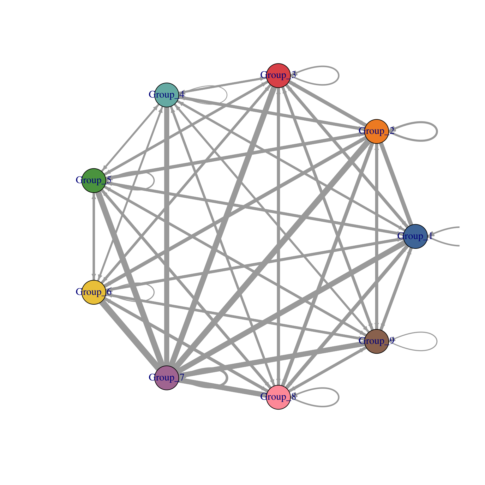
visLigandReceptor(sce_citeseq, type = "group_network", receptor_type = "ADT")

visLigandReceptor(sce_citeseq, type = "group_heatmap", receptor_type = "ADT")

visLigandReceptor(sce_citeseq, type = "lr_network", receptor_type = "ADT")
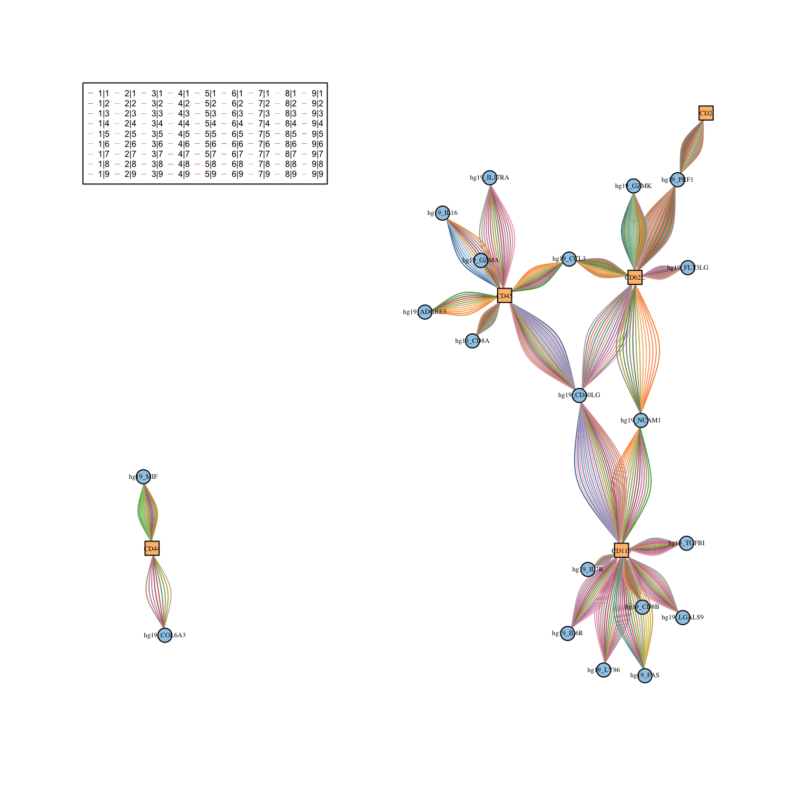
Between-sample analysis
Lastly, we will jointly analyse the current PBMC CITE-seq data, taken from healthy human donors, and another subset of CITE-seq data from patients with cutaneous T-cell lymphoma (CTCL), again from Mimitou et al. (2019). The data sce_ctcl_subset provided in our CiteFuse package already contains the clustering information.
data("sce_ctcl_subset", package = "CiteFuse")
To visualise and compare gene or protein expression data, we can use visualiseExprsList function.
visualiseExprsList(sce_list = list(control = sce_citeseq, ctcl = sce_ctcl_subset), plot = "boxplot", altExp_name = "none", exprs_value = "logcounts", feature_subset = c("hg19_S100A10", "hg19_CD8A"), group_by = c("SNF_W_louvain", "SNF_W_louvain"))

visualiseExprsList(sce_list = list(control = sce_citeseq, ctcl = sce_ctcl_subset), plot = "boxplot", altExp_name = "ADT", feature_subset = c("CD19", "CD8"), group_by = c("SNF_W_louvain", "SNF_W_louvain"))

We can then perform differential expression analysis of the RNA expression level across the two clusters that have high CD19 expression in ADT.
de_res <- DEgenesCross(sce_list = list(control = sce_citeseq, ctcl = sce_ctcl_subset), colData_name = c("SNF_W_louvain", "SNF_W_louvain"), group_to_test = c("2", "6")) de_res_filter <- selectDEgenes(de_res = de_res) de_res_filter #> $control #> stats.W pval p.adjust meanExprs.1 meanExprs.2 meanPct.1 #> hg19_NKG7 82.0 9.717299e-13 9.717299e-13 0.51066894 3.2333024 0.30232558 #> hg19_CST7 138.0 5.875063e-12 5.875063e-12 0.22512314 2.2146495 0.13953488 #> hg19_GNLY 186.0 8.935760e-12 8.935760e-12 0.07220401 2.7782587 0.02325581 #> hg19_CCL5 124.0 2.418174e-11 2.418174e-11 1.04348029 3.7809281 0.37209302 #> hg19_GZMH 258.0 1.807873e-10 1.807873e-10 0.00000000 1.4711399 0.00000000 #> hg19_ITGB2 210.0 4.203966e-09 4.203966e-09 0.44185664 1.7346818 0.44186047 #> hg19_KLRD1 322.5 5.000482e-08 5.000482e-08 0.09327555 1.0358615 0.09302326 #> hg19_GZMA 284.5 5.732252e-08 5.732252e-08 0.32515702 1.5433119 0.18604651 #> hg19_ZEB2 387.0 7.878997e-08 7.878997e-08 0.00000000 0.8211807 0.00000000 #> hg19_CD99 274.0 1.679625e-07 1.679625e-07 0.58551572 1.5699157 0.46511628 #> meanPct.2 meanDiff pctDiff name group #> hg19_NKG7 1.0000000 0.6976744 0.6976744 hg19_NKG7 control #> hg19_CST7 0.8947368 0.7552020 0.7552020 hg19_CST7 control #> hg19_GNLY 0.7894737 0.7662179 0.7662179 hg19_GNLY control #> hg19_CCL5 1.0000000 0.6279070 0.6279070 hg19_CCL5 control #> hg19_GZMH 0.6842105 0.6842105 0.6842105 hg19_GZMH control #> hg19_ITGB2 0.8684211 0.4265606 0.4265606 hg19_ITGB2 control #> hg19_KLRD1 0.6578947 0.5648715 0.5648715 hg19_KLRD1 control #> hg19_GZMA 0.8157895 0.6297430 0.6297430 hg19_GZMA control #> hg19_ZEB2 0.5263158 0.5263158 0.5263158 hg19_ZEB2 control #> hg19_CD99 0.8947368 0.4296206 0.4296206 hg19_CD99 control #> #> $ctcl #> stats.W pval p.adjust meanExprs.1 meanExprs.2 #> hg19_RPS26 0.0 1.087530e-14 1.087530e-14 1.42819970 5.072471 #> hg19_LTB 235.0 1.478865e-08 1.478865e-08 0.48566164 1.978730 #> hg19_SELL 298.5 3.618421e-08 3.618421e-08 0.10674144 1.152572 #> hg19_LEPROTL1 268.0 9.163954e-08 9.163954e-08 0.37427389 1.300745 #> hg19_NOSIP 306.0 2.589055e-07 2.589055e-07 0.23412389 1.157235 #> hg19_LINC02446 352.0 3.887845e-07 3.887845e-07 0.09889831 1.004083 #> hg19_FOS 353.5 5.438707e-07 5.438707e-07 0.14088922 1.125337 #> hg19_TMEM123 331.0 1.090629e-06 1.090629e-06 0.26112624 1.012034 #> hg19_LDHB 325.0 2.344648e-06 2.344648e-06 0.70148411 1.588459 #> hg19_NPM1 323.0 2.836125e-06 2.836125e-06 1.24903807 2.202268 #> meanPct.1 meanPct.2 meanDiff pctDiff name group #> hg19_RPS26 0.84210526 1.0000000 0.1578947 0.1578947 hg19_RPS26 ctcl #> hg19_LTB 0.28947368 0.9069767 0.6175031 0.6175031 hg19_LTB ctcl #> hg19_SELL 0.07894737 0.6976744 0.6187271 0.6187271 hg19_SELL ctcl #> hg19_LEPROTL1 0.28947368 0.9069767 0.6175031 0.6175031 hg19_LEPROTL1 ctcl #> hg19_NOSIP 0.21052632 0.7674419 0.5569155 0.5569155 hg19_NOSIP ctcl #> hg19_LINC02446 0.07894737 0.6279070 0.5489596 0.5489596 hg19_LINC02446 ctcl #> hg19_FOS 0.07894737 0.6511628 0.5722154 0.5722154 hg19_FOS ctcl #> hg19_TMEM123 0.23684211 0.7674419 0.5305998 0.5305998 hg19_TMEM123 ctcl #> hg19_LDHB 0.50000000 0.8604651 0.3604651 0.3604651 hg19_LDHB ctcl #> hg19_NPM1 0.68421053 0.9534884 0.2692778 0.2692778 hg19_NPM1 ctcl
Final notes
A compiled version of the vignette is available on the workshop website.
If you have questions that you could not ask during the workshop, feel free to open an issue on the github repository here.
sessionInfo() #> R version 4.0.2 (2020-06-22) #> Platform: x86_64-apple-darwin17.0 (64-bit) #> Running under: macOS Mojave 10.14.6 #> #> Matrix products: default #> BLAS: /Library/Frameworks/R.framework/Versions/4.0/Resources/lib/libRblas.dylib #> LAPACK: /Library/Frameworks/R.framework/Versions/4.0/Resources/lib/libRlapack.dylib #> #> locale: #> [1] en_AU.UTF-8/en_AU.UTF-8/en_AU.UTF-8/C/en_AU.UTF-8/en_AU.UTF-8 #> #> attached base packages: #> [1] parallel stats4 stats graphics grDevices utils datasets #> [8] methods base #> #> other attached packages: #> [1] mclust_5.4.6 gridExtra_2.3 #> [3] DT_0.14 scater_1.16.2 #> [5] ggplot2_3.3.2 SingleCellExperiment_1.10.1 #> [7] SummarizedExperiment_1.18.1 DelayedArray_0.14.0 #> [9] matrixStats_0.56.0 Biobase_2.48.0 #> [11] GenomicRanges_1.40.0 GenomeInfoDb_1.24.2 #> [13] IRanges_2.22.2 S4Vectors_0.26.1 #> [15] BiocGenerics_0.34.0 CiteFuse_1.0.0 #> #> loaded via a namespace (and not attached): #> [1] Rtsne_0.15 ggbeeswarm_0.6.0 #> [3] colorspace_1.4-1 ellipsis_0.3.1 #> [5] ggridges_0.5.2 rprojroot_1.3-2 #> [7] XVector_0.28.0 BiocNeighbors_1.6.0 #> [9] fs_1.4.2 rstudioapi_0.11 #> [11] farver_2.0.3 graphlayouts_0.7.0 #> [13] ggrepel_0.8.2 RSpectra_0.16-0 #> [15] splines_4.0.2 knitr_1.29 #> [17] heatmap.plus_1.3 polyclip_1.10-0 #> [19] jsonlite_1.7.0 alluvial_0.1-2 #> [21] kernlab_0.9-29 pheatmap_1.0.12 #> [23] uwot_0.1.8 ggforce_0.3.2 #> [25] ExPosition_2.8.23 compiler_4.0.2 #> [27] dqrng_0.2.1 prettyGraphs_2.1.6 #> [29] backports_1.1.8 assertthat_0.2.1 #> [31] Matrix_1.2-18 limma_3.44.3 #> [33] tweenr_1.0.1 BiocSingular_1.4.0 #> [35] htmltools_0.5.0 tools_4.0.2 #> [37] rsvd_1.0.3 igraph_1.2.5 #> [39] gtable_0.3.0 glue_1.4.1 #> [41] GenomeInfoDbData_1.2.3 reshape2_1.4.4 #> [43] dplyr_1.0.0 Rcpp_1.0.4.6 #> [45] pkgdown_1.6.1 vctrs_0.3.1 #> [47] crosstalk_1.1.0.1 DelayedMatrixStats_1.10.1 #> [49] ggraph_2.0.3 xfun_0.15 #> [51] stringr_1.4.0 lifecycle_0.2.0 #> [53] irlba_2.3.3 statmod_1.4.34 #> [55] edgeR_3.30.3 zlibbioc_1.34.0 #> [57] MASS_7.3-51.6 scales_1.1.1 #> [59] tidygraph_1.2.0 ragg_0.3.1 #> [61] rhdf5_2.32.2 RColorBrewer_1.1-2 #> [63] SNFtool_2.3.0 yaml_2.2.1 #> [65] memoise_1.1.0 segmented_1.2-0 #> [67] stringi_1.4.6 desc_1.2.0 #> [69] randomForest_4.6-14 scran_1.16.0 #> [71] BiocParallel_1.22.0 rlang_0.4.6 #> [73] pkgconfig_2.0.3 systemfonts_0.3.2 #> [75] bitops_1.0-6 evaluate_0.14 #> [77] lattice_0.20-41 purrr_0.3.4 #> [79] Rhdf5lib_1.10.0 labeling_0.3 #> [81] htmlwidgets_1.5.1 cowplot_1.0.0 #> [83] tidyselect_1.1.0 plyr_1.8.6 #> [85] magrittr_1.5 R6_2.4.1 #> [87] generics_0.0.2 pillar_1.4.4 #> [89] withr_2.2.0 mixtools_1.2.0 #> [91] survival_3.1-12 RCurl_1.98-1.2 #> [93] tibble_3.0.1 crayon_1.3.4 #> [95] rmarkdown_2.3 viridis_0.5.1 #> [97] locfit_1.5-9.4 grid_4.0.2 #> [99] FNN_1.1.3 propr_4.2.6 #> [101] digest_0.6.25 tidyr_1.1.0 #> [103] dbscan_1.1-5 munsell_0.5.0 #> [105] beeswarm_0.2.3 viridisLite_0.3.0 #> [107] vipor_0.4.5